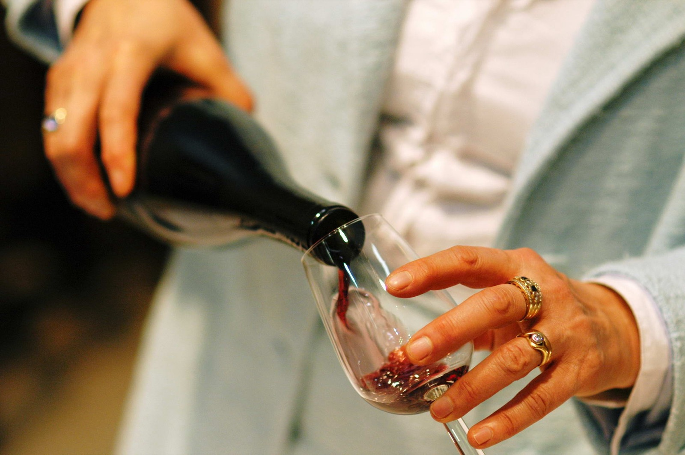
{kind=link}
My grandfather had a riddle he liked to ask over wine, poured from a damigiana, the big straw-caged glass demijohn that sat in every Italian cellar.
You have an eight-liter jug, full. You have two empty jugs, one that holds five liters and one that holds three. None of them has any markings. You may only pour from one vessel into another until either the source is empty or the target is full, with no guessing and no eyeballing half-full jugs.
Divide the wine into two equal parts: four liters and four liters.
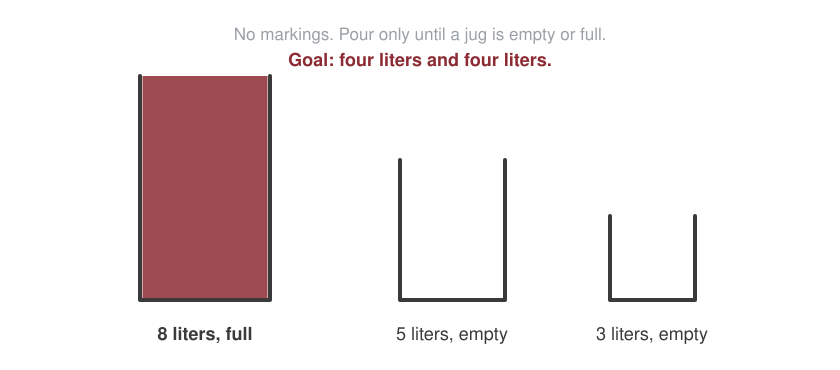
Stop here and try it in your head. It is harder than it looks, and then, once you see it, easier than it looked.
He did not invent it, though I did not know that then. The puzzle appears in a French arithmetic manuscript of 1484, and it was made famous by Niccolò Tartaglia, the self-taught Renaissance mathematician who also cracked the cubic equation and got swindled out of the credit. For five centuries, people have been passing wine and this riddle across tables. My grandfather was a link in that chain, and he almost certainly did not know it either.
The dance
Here is the solution, as a dance in seven pours. Each panel shows how much the 8, 5, and 3 liter jugs hold at that moment.
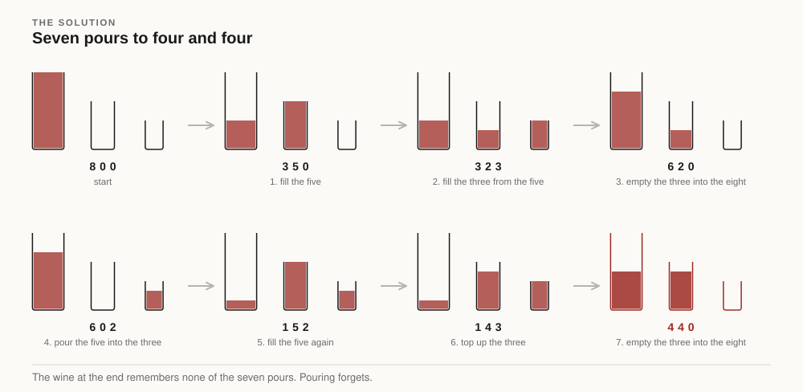
Seven pours, and no way to do it in fewer.
And this dance is not the only one. At almost every moment you face a choice: from most states there are three or four legal pours, not one. Map them all and the riddle is not a line but a web of sixteen states, laced together by every move the rules permit. Solving it means threading a path from the full jug to four-and-four, and there are several. The shortest takes seven pours; a scenic route takes eight and rejoins the same goal.
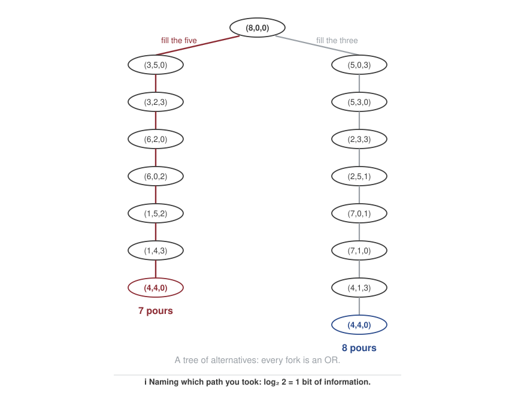
Hold on to this picture: a graph whose every branching is an OR, an either/or choice between next moves. A second, very different kind of tree is coming.
Now notice something about the prize. The four liters you worked so hard for are completely ordinary. Nothing about that wine remembers the dance. If someone walked in with four liters measured from a marked bottle, the two would be identical in every possible respect. Seven clever pours or one boring one: the result carries no trace of its history.
That is the first lesson, and it is about addition. Pouring is addition and subtraction of amounts, and amounts have no memory. When wine merges, the histories of the parts are annihilated. An amount is a number and nothing more.
The referee
The second lesson is hiding underneath, and my grandfather never mentioned it. Why does the riddle work at all? Which amounts can a pouring dance ever isolate?
Answer: exactly the multiples of the greatest common divisor of the jug sizes. Five and three share no common factor, so their gcd is 1, and every whole number of liters from zero to eight is reachable. That is why four is possible. But give my grandfather jugs of 8, 6, and 2 liters and no sequence of pours, however long, will ever isolate an odd liter of wine. Every reachable amount would be even, forever. One liter, three liters, five: unreachable, not by lack of cleverness but by law.
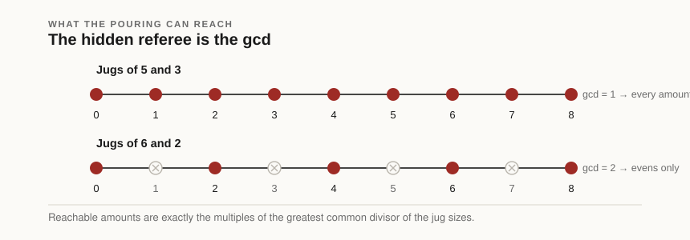
Look once more at the dance and you can see the law working. Over the seven pours, the five-liter jug was filled twice and the three-liter jug was emptied twice, and 2 × 5 − 2 × 3 = 4. The dance is a physical computation. The wine is enacting an identity about fives and threes, the kind number theorists write down for coprime numbers.
Sit with how strange this is. The game is purely additive: pour, merge, top up. Nothing in the rules mentions multiplication. And yet the referee deciding which amounts are reachable is a multiplicative object, the gcd, which is to say: the atoms that 5 and 3 are built from. The pouring world is governed, from outside, by the packing world.
Which brings me to the actual subject of this post. I have come to believe the riddle is a small window onto something larger: nature has exactly two ways of combining things, and almost everything interesting in mathematics and physics happens at the border between them.
The two verbs
The first verb is OR. When two outcomes exclude each other, their chances pool: the probability of rolling a 3 or a 4 with one die is 1/6 + 1/6. Alternatives sit side by side, like wines merged in a jug. OR is addition. Picture a fork in the road.
The second verb is AND. When two events are independent and you need both, their chances compound: the probability that two coin flips both come up heads is 1/2 × 1/2. One condition nested inside another. AND is multiplication. Picture two doors in a corridor: to pass, you must open the first and the second.
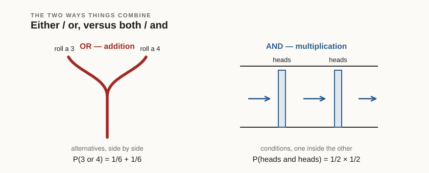
The two verbs are not interchangeable, but they have an official translator. The information in one coin flip is one bit; in two flips, two bits. The probabilities multiplied (1/2 × 1/2 = 1/4) while the information added (1 + 1 = 2). The translator is the logarithm: it converts AND-language into OR-language, compounding into accumulating. This one fact explains why logarithms appear wherever humans build rulers for nature: decibels, earthquake magnitudes, pH. The world compounds; our senses and our rulers prefer to pour.
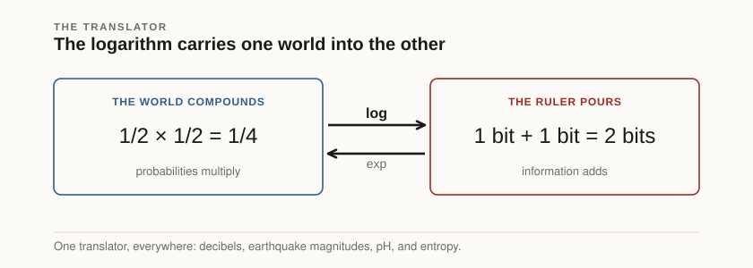
Packing
Here is a second kitchen experiment, the mirror image of my grandfather's.
Take six one-liter bottles. Do not pour them anywhere. Instead, pack them: two bottles to a carton, three cartons. That is 3 × 2 liters, taken literally: three groups of two. Now repack: three bottles to a carton, two cartons. That is 2 × 3.
Both arrangements contain six liters; a scale cannot tell them apart. But they are different objects. One is three small cartons, the other two big ones. And notice the crucial thing: at no point did multiplication produce six liters. It produced a structured package whose label reads six. To actually obtain six loose liters from 3 × 2, you must perform a second and different act: tear the cartons open and pour, which is to say, hand the result over to addition.
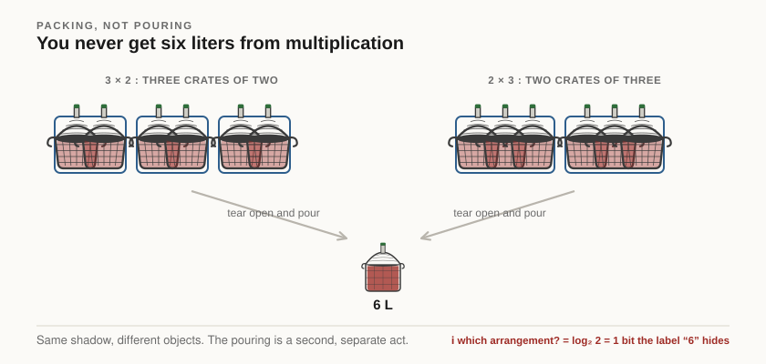
You never get six liters from multiplication. You get a package whose shadow is 6.
So the two verbs are not just AND and OR of probability. They are two opposite attitudes toward structure. Addition levels: it merges alternatives and erases history, like the wine in the jug. Multiplication builds: it nests things inside things and remembers, like cartons inside a van. The riddle's two lessons were exactly this pair: pouring forgets, and yet what pouring can reach is dictated by packing.
One atom, or infinitely many
Ask a chemist's question about each verb: what are its atoms, the objects that cannot be decomposed further?
In the world of addition the answer is brutally short: there is one atom, the number 1. Every integer is 1 + 1 + ... + 1, and that is its entire additive biography. True, complete, and flat. The additive world has no chemistry.
In the world of multiplication, the atoms are the primes: the packages that cannot be repacked as several identical smaller cartons. Six bottles go into two cartons of three or three of two; seven bottles refuse every such arrangement. And the primes are not one or two special cases. They are an infinite periodic table, spaced irregularly, with no closed formula in sight after two and a half millennia of looking.
Why does one verb have a single atom and the other an infinite alphabet? Because OR merely accumulates, while AND nests, and an operation that nests is rich enough to contain irreducibles. Richness has a price: mystery. It is no accident that the celebrated unsolved problems of arithmetic are, without exception, sentences that mix the two verbs. Goldbach's conjecture asks an addition question about the atoms of multiplication: is every even number the sum of two primes? The Riemann Hypothesis, beneath its analytic dress, is a statement about how the atoms of AND are distributed along the additive line. My grandfather's riddle, where a pouring game answers to the gcd, is the same species of question, small enough to fit in a kitchen.
Keeping the packages
School arithmetic tears open every carton on sight: 3 × 2 = 6, done, next exercise. Some months ago I began to wonder what happens if you refuse: if you treat the package, not the number, as the real object. This became a research project, and eventually a paper, and the rest of this post is what fell out.
The move sounds small and is not. If a multiplication is a packing, the integer is demoted from object to label: the shadow the package casts on a scale. Distinct packings share a label. Take 30 = 2 × 3 × 5, our running example for the rest of the post. You can pour the bottles in any of six orders, and for each order you can nest either the first pair or the last, so 30 can be assembled in twelve distinct ways: 2 × (3 × 5), (2 × 3) × 5, 5 × (3 × 2), and nine more. Thirty is not one thing. Thirty is a label worn by twelve structures.
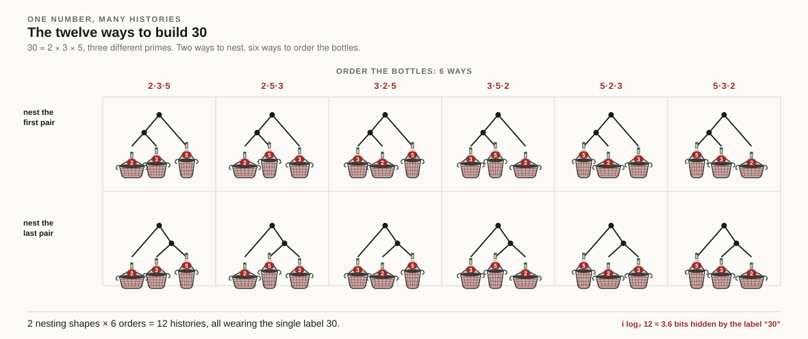
Forgetting is not one act but two, and they can be done in either order. Forget which pair you nested first, and the twelve histories collapse to six ordered lists of bottles. Forget the order of the bottles instead, and they collapse to three bare tree shapes. Do both, in whichever sequence, and you land on a single number. The two roads always agree, and that they end at exactly one number is a theorem with a famous name.
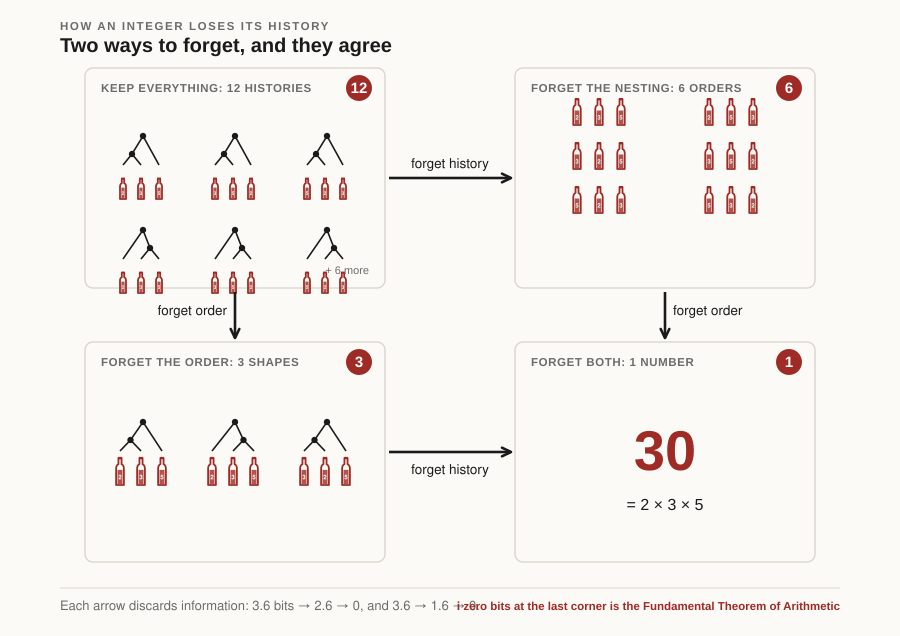
These packing diagrams are trees too, but of the opposite species from the riddle's. The pouring tree branched on OR: each fork a choice between alternative next moves, and possibilities add across branches. A packing tree branches on AND: each split names the parts that must all be present, and counts multiply across children. Computer scientists call these OR-trees and AND-trees. A game is an OR-tree; a molecule is an AND-tree. The two verbs even have their own species of diagram.
Physics has an exact name for this situation, attached to the most misunderstood word in science: entropy. Strip away the folklore about disorder and entropy is just counting. When many microscopic configurations share one macroscopic reading, the reading is called a macrostate, the configurations are its microstates, and the entropy is the logarithm of how many there are. That is the entire definition; it is carved on Boltzmann's tombstone, S = k log W. And the logarithm is there for the reason you already know: it is the translator. Independent systems multiply their counts, because configurations combine by AND, but we want a measure that pours like the stuff it describes. Entropy is AND-counting expressed in OR-units.
Information theory is the same counting seen from the receiving end. Shannon's 1948 insight was that the information in a message is the logarithm of the number of alternatives it rules out: a fair coin flip resolves two, and carries one bit. So learning which microstate hides behind a macrostate is worth exactly the entropy in bits: entropy is the number of yes/no questions standing between the label and the thing itself. One quantity, two directions: to the physicist it measures what the macrostate forgot, to the engineer it prices what a message must carry to restore it.
In this view of arithmetic, then, an integer has an entropy. The entropy of 30 is log 12: about 3.6 bits, between three and four yes/no questions to learn which of its twelve assembly histories you are holding. Primes are the states of zero entropy, readings with a unique history: seeing the label 7 tells you everything, seeing the label 30 leaves 3.6 bits unsaid.
And physics has a machine for processing exactly this data: the partition function, a single sum that weighs every configuration by its size and adds them all up. Let me build it, because the destination is a surprise.
Give each number a weight that shrinks as the number grows: let 30 count for 1/30s, where s is a knob we can turn (a colder gas, larger s, leans harder on the small numbers). Now add up the weights of every integer. If we work at the fully forgotten corner, where each number counts once, the sum is
1/1s + 1/2s + 1/3s + 1/4s + ··· + 1/30s + ···
and 30's single drop in that ocean is exactly the "forget everything" corner of its square. Keep the history instead, weigh 30 by its twelve microstates, and it pours in twelve times as heavily (12/30s): a different, richer sum. Each level of memory gives its own partition function, all built from the same per-number weights.
The fully forgotten one is the sum written above, and it has a name that will stop a mathematician in their tracks. That endless sum equals a product, one factor for every prime, and it is the most studied object in all of mathematics: Riemann's zeta function. The primes appear not as terms but as the factors from which the whole sum is woven, which is the AND of our two verbs hiding inside the OR. Written in the language of this post: zeta is the partition function of a gas whose particles are the primes, each carrying energy log p. (The logarithm once more, translating between the two worlds: the numbers multiply, their energies add.) Physicists call it the gas of numbers.
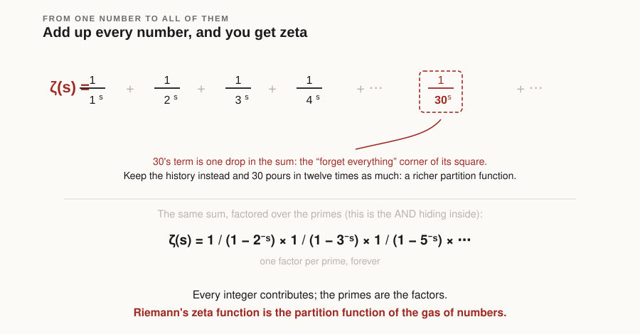
This is the whole arc in one line. We started by refusing to pour 3 × 2 into six liters; we ended at the function whose zeros are the deepest open problem in mathematics. The bridge between them was only ever bookkeeping: count the histories of each number, weigh them, and add.
Keep more structure and the machine produces new partition functions, cousins of zeta that mathematics had less reason to study before. The fully structured one obeys a self-consistency equation you can state in one breath (a package is a prime, or a pair of packages), and this equation is, symbol for symbol, the bootstrap equation that particle physicists in the 1960s wrote for strongly interacting matter. That theory's signature was a maximum temperature: heat the system past a point and added energy makes more particles instead of more speed. The arithmetic version has the same feature. The gas of packages has a limiting temperature, four of them in fact, a ladder of critical points, one per level of remembered structure.
And where zeta has its famous zeros, the package gas has its own critical points in the complex plane. We located 595 of them. They do not fall on a straight line, the way Riemann's are conjectured to do; instead they march upward in a rigid, almost crystalline pattern, unlike random spectra, with a density we could compute exactly and then verify against the census.
That is the view once the cartons stay closed: integers with entropy, arithmetic with a temperature, a new spectrum with its own geometry. Proofs, constants, and code are all in the paper linked at the end; every number in this post can be recomputed from an open repository.
A footnote that turned out to be real
All of this began as a thought experiment, and thought experiments are cheap. So here is the smallest hard thing it produced. When you count the unordered histories carefully, one fussy case decides everything: a number that splits into two identical halves. The count there is not the obvious product but a smaller number, because the two halves cannot be told apart, the same indistinguishability that gave 30 its entropy a moment ago.
The Online Encyclopedia of Integer Sequences, where mathematicians register such counts, had this exact sequence recorded with the obvious product, which is wrong. We noticed, sent ten thousand computed terms, and the editors corrected the entry within a day. It now carries the right formula and a link to the paper. A kitchen thought experiment, carried far enough, moved a line in the reference books.
A toast
So: nature has two verbs. OR pools and forgets; AND nests and remembers. One has a single atom; the other has the primes. The logarithm ferries between them, physics happens on the ferry, and the oldest unsolved questions in mathematics are the ones that force the two verbs into a single sentence.
My grandfather's riddle was doing all of this already: an additive dance, refereed by multiplicative atoms, played with wine. He asked it, I now think, the way all the best riddles are asked: as a gift wrapped so well you spend decades unwrapping it.
Salute.
The paper: Prime-Leaf Tree Theory. Code and data: github.com/gbarbalinardo/primeleaf. The corrected encyclopedia entry: OEIS A375120.